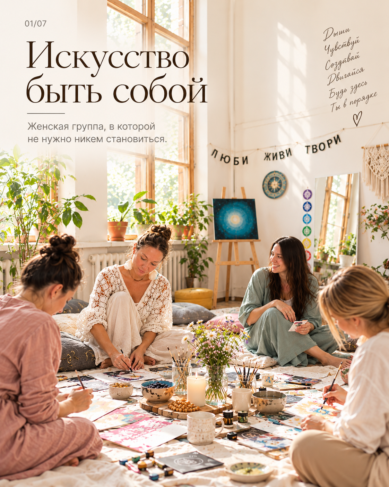
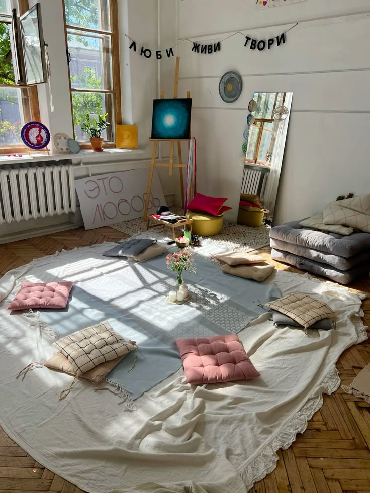
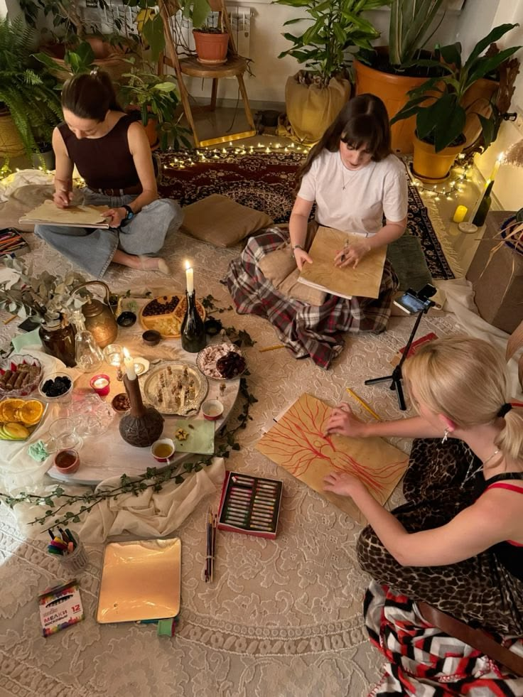
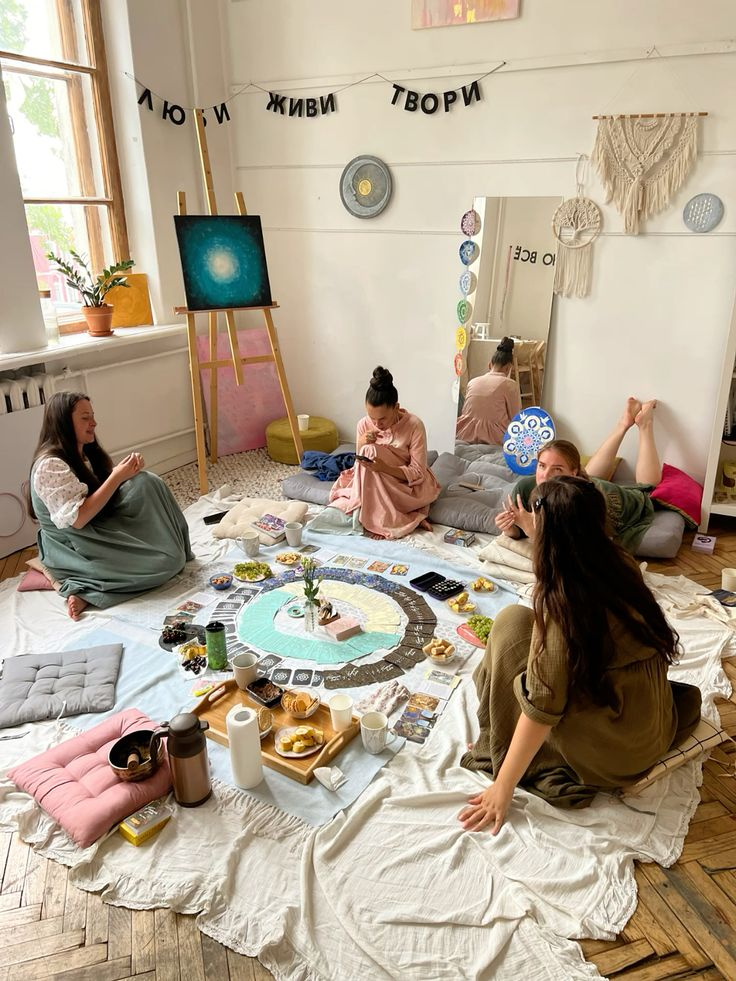
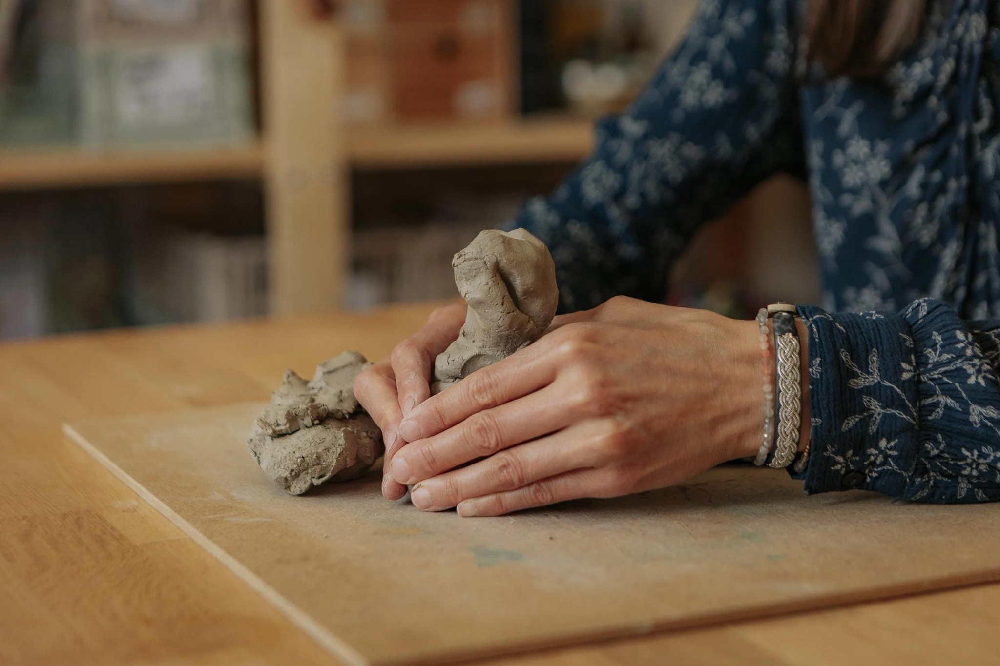
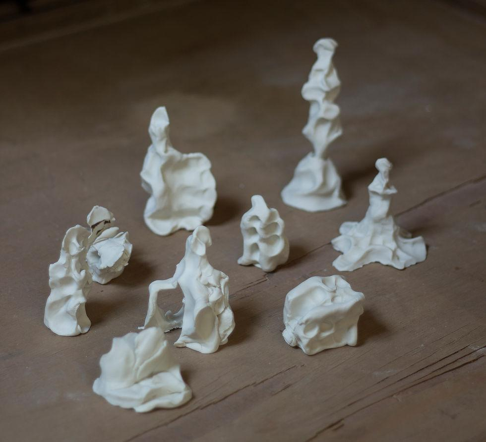

Искусство быть собой
Женская группа, в которой не нужно никем становиться.
Пространство для исследования чувств, желаний, отношений с собой и личных границ через художественные практики.
Ведущая: Анна Анопова — посмотреть профиль специалиста
Полная программа на авторском сайте
Атмосфера встреч
Творчество, общение и возможность быть собой. Не требуется художественная подготовка.



Восемь встреч — восемь открытий
Каждая встреча — самостоятельное художественное исследование. Можно рисовать, лепить, двигаться, работать с бумагой и тканью. Не нужно уметь рисовать или заранее знать, каким должен быть результат.
01Какая я сегодня?
Знакомство с собой через цвет, линию и свободное рисование. С каким состоянием я пришла? Что мне важно сейчас?
Художественная практика: Интуитивная живопись «Мой внутренний пейзаж».
02Моё тело — моя территория
Исследуем телесные ощущения, движение, комфорт и право занимать пространство. Не оцениваем внешность и не ищем «правильных» ощущений.
Художественная практика: Большой лист, условный силуэт, свободное движение и следы жестов.
03Моим чувствам есть место
Какие чувства легко выражать, а каким редко находится место? Пробуем разные художественные языки.
Художественная практика: Экспрессивная живопись, фактуры и отпечатки.
04Где заканчиваюсь я и начинаются другие?
Исследуем личные границы, близость и дистанцию: что хочется впустить, а чему сказать «нет»?
Художественная практика: Пространственная композиция с нитями, бумагой и подвижными границами.
05Я и мои отношения


Замечаем, как меняется восприятие отношений, когда можно двигать объекты, менять расстояние и форму.
Художественная практика: Глиняные формы «Я и другие»; тактильное знакомство с глиной.
06Образы, в которых я узнаю себя
Ищем личные символы, качества и воспоминания, которые хочется сохранить. Карты помогают вести диалог с собственными ассоциациями.
Художественная практика: Серия авторских метафорических карт: коллаж, акварель, отпечатки, нити.
07Моя сила и моя нежность
Что меня поддерживает? Как можно заботиться о себе, не требуя постоянной силы?
Художественная практика: Текстильная композиция и коллаж «То, что меня поддерживает».
08Искусство быть собой
Собираем открытия восьми встреч, замечаем изменения и выбираем, что хочется взять с собой дальше.
Художественная практика: Авторская книга «Моя история продолжается».
Участие в телесных и групповых практиках добровольное. Можно выбирать удобный способ работы и не делиться личным, если не хочется.